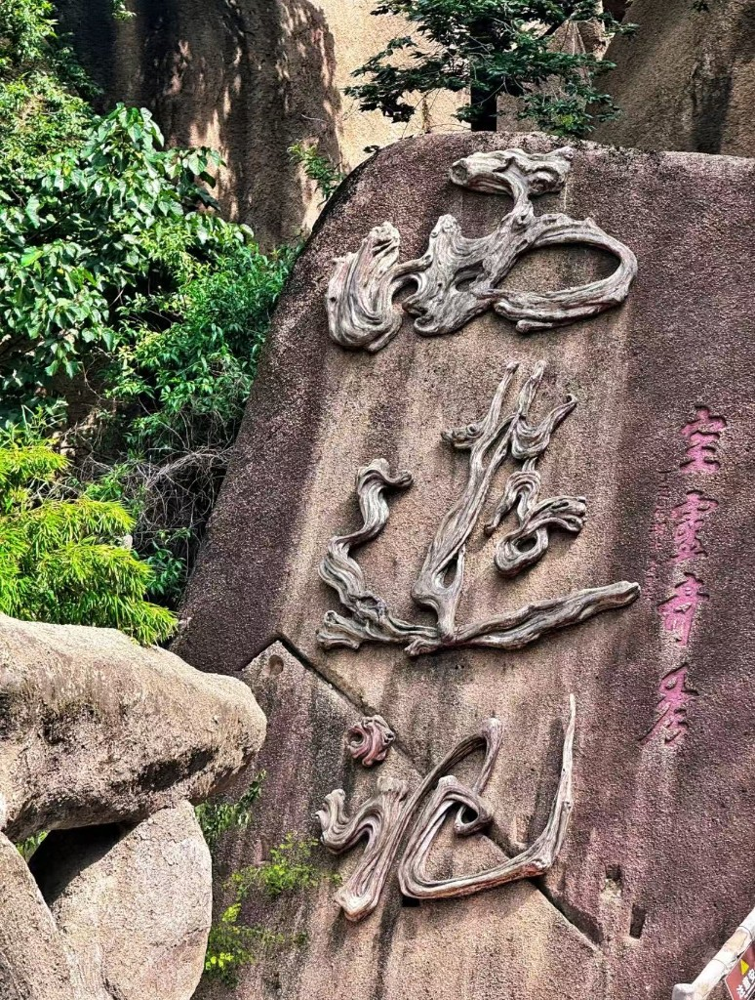

文脉溯源：灵山启笔，名著天成
《西游记》的传世笔墨，根植于嵖岈山的山水风骨与民间文脉。相传唐代高僧玄奘曾游历嵖岈山、在此讲经参禅，当地流传着大量降妖取经、仙山悟道的民间传说，为西游故事积累了丰厚的本土文化素材。
明代文学家吴承恩游历嵖岈山时，被这里形态各异、栩栩如生的天然奇石与清幽秘境深深震撼。山中石猴出世、师徒剪影、仙洞幽谷的自然奇观，完美契合神魔仙侠的奇幻意境，成为其创作《西游记》的核心灵感来源。不同于后世人工复刻的西游景观，嵖岈山真正实现了先有山水实景，后有西游名著，一山一石皆为原著原型，一洞一谷皆藏西游篇章。